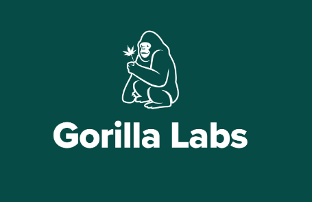

Optimizing the Parris Law Firm website was one of my most innovative projects. We revamped the UI/UX to be clean, modern, and conversion-focused. To boost performance, we migrated from a bloated WordPress setup to the headless Sanity.io CMS, enabling faster content delivery and easier management. Replacing the outdated PHP stack with Next.js drastically improved load times, SEO, and maintainability through server-side rendering and static generation. This strategic shift modernized the site and set it up for long-term scalability.
Pokédex
The Pokédex is was one of my favorite projects and it utilizes React.js, Fetch.js, Bootstrap and the Poke API to memic the functionality
of the actual Pokédex Ash used throughout the animated show.
Student Management Application
The student management system was built in C++ and designed for school administrators, faculty, and students who manage their rosters and course information for an academic institution.

Re-optimized E-commerce Site
While working for Green Gorilla, I helped re-optimize their e-commerce site maintained through WordPress. The project resulted in a state of
the art user interface and experience that increased the over all sales for the company and added native-like app performance do to incoperating React and the Gutenburg Editor.
Los Angeles Mountains - Sports Goods
This was a fun project that I had to build as part of a front-end developer technical assessment challenge.
ATM Application
The ATM application was built using Java and simulates simple banking transactions through the terminal/console. Users of the application can access
the application by downloading the source code and running the program locally.
Managed multi-channel ad campaigns across Google Ads, Meta Ads, TikTok Ads, and StackAdapt, tailored for high-intent legal audiences. Continuously optimized for conversions, achieving a 20%+ conversion rate in one of the most competitive PPC industries.
Managed the copywriting for organic social channels, ensuring platform specific engagement while maintaining a consistent brand voice.
Designed and implemented custom data pipelines to track user behavior across platforms using third-party tracking pixels, GA4, GTM, Conversion APIs, and JavaScript, supporting precise remarketing and performance attribution.
Spearheaded a full website redesign, resulting in a 50%+ improvement in page load speed and measurable gains in SEO rankings, user engagement, and mobile responsiveness.
Created high-impact performance reports via Big Query, GA4, and Excel to analyze campaign ROI, keyword rankings, and ad spend. Used insights to drive strategic adjustments and stakeholder reporting.
Oversaw both on-page and technical SEO, including content planning, keyword targeting, backlink acquisition, and site architecture improvements, resulting in consistent traffic growth and reduced bounce rates.
Successfully ran Spanish-language ad campaigns across Google Ads and Meta, including writing Spanish copy and guiding the visual creative strategy to deliver hyper-targeted messaging for Hispanic audiences in Southern California.
Implemented social media SEO tactics aligned with our company’s keyword and SEO strategies.
Increased purchases by 20% through UX improvements and optimized checkout flows on eCommerce sites.
Built custom WordPress themes and plugins.
Communicated with multi-disciplinary teams of engineers, designers, producers, and clients on a daily basis.
Enhanced site speed and functionality; collaborated with back-end team and deployed A/B tests and bug fixes.
Worked closely with designers and management team to develop, document, and manage Green Gorilla's main e-commerce website using PHP, Sass, and JavaScript (React).
(Information Technology Department) March 2020 - July 2020
Designed responsive, SEO-optimized web pages and dynamic forms, boosting usability and site traffic.
Maintained and developed key landing pages; utilized browser debugging tools to ensure functionality and cross-device performance.
Proposed and implemented scalable solutions to issues identified with cloud services and applications responsible for communicating with the local city's constituency.
(Agricultural Research Service) August 2017 - January 2019
Queried the Agricultural Research Information Services (ARIS) database using SQL (Oracle) for any data requested by management.
Used Excel and Tableau to obtain statistical data from the ARIS database and manipulated data to present tables and charts to management.
Provided administrative, clerical, and data entry support to management.
Provided support on the acquisition, disposal, and effective management and utilization of several federal fleet vehicles.
Reviewed, formatted, and edited annual reports to document the progress and accomplishments of scientists, which were conducted under extreme time restrictions.
Coordinated the submission of Research Position Evaluation (RPE) cases for mandatory reviews. Reviewed the cases for format, completeness, and conformance to existing RPE policies and procedures prior to submitting them to the Area Director for final revision.
About Me
I create unique user experience for the web.
I'm a hybrid professional with a unique blend of web development expertise and digital marketing strategy—a combination that allows me to build experiences that not only look great but perform exceptionally well.
My journey began in front-end web development, where I honed my skills in HTML, CSS, JavaScript, and React, creating fast, accessible, and responsive websites. Over time, I expanded my focus beyond code to understand how users find and interact with websites—leading me naturally into the world of digital marketing.
Most recently, I worked as a Digital Marketing Specialist for a leading California law firm, where I built full-funnel ad campaigns across Google Ads, Meta, TikTok, and StackAdapt. I led a major website redesign project, engineered robust tracking systems using GA4, GTM, and Conversion APIs, and produced analytics reports using BigQuery and Excel to drive decision-making. I also developed and launched Spanish-language campaigns, crafting bilingual copy and guiding creative to effectively reach and convert Hispanic audiences.
Today, I combine my developer's eye for precision with a marketer’s focus on results. Whether it's building a high-converting landing page, implementing end-to-end tracking, or optimizing an ad campaign, I bring a data-driven, performance-first approach to every project.
My hobbies
I'm passionate about IoT and smart technology, and I’m working toward building smart home devices with sleek, intuitive user experiences. I love bridging the gap between code and the physical world.
When I’m not tinkering with tech, you’ll find me exploring nature or diving into the histories of ancient civilizations, two things that keep me grounded and inspired.